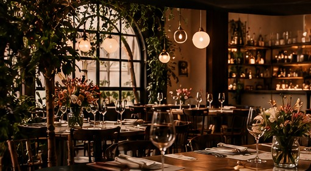
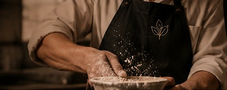
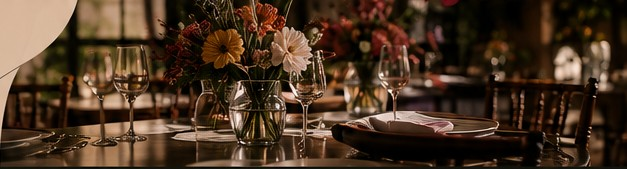

Feito com o que a estação oferece
Feito com o que a estação oferece
DELI · CAFÉ · COMIDA DE RAIZ
Comida de
verdade.
Histórias à mesa.
Sabores da estação, ingredientes locais
e experiências que ficam na memória.
descobrir

UMA EXPERIÊNCIA ÚNICA
Um lugar para
desacelerar.
Café, almoço, confeitaria e momentos especiais em um ambiente acolhedor, cheio de personalidade.
Descubra o Botané



Da cozinha da chef JosieNOSSO MANIFESTO
Comida com coração,
alma e ousadia.
Depois de mais de 16 anos cozinhando em outros países, a chef Josie Franke Gessner voltou às suas raízes para compartilhar o sabor da comida de verdade.
Conheça a história da chef com carinho, Josie
CATERING
Botané à sua mesa.
E no seu evento.
Menus sob medida, louças, decoração e cuidado em cada detalhe para encontros memoráveis.
Solicitar uma propostaVISITE-NOS
Uma mesa está
esperando por você.
Rua Frederico Jensen, 1030
Sala 6 e 7 · Itoupavazinha
Blumenau — SC
Terça a sexta · 9h30 às 18h
Sábado · 9h às 18h30
Confirme os horários em feriados.